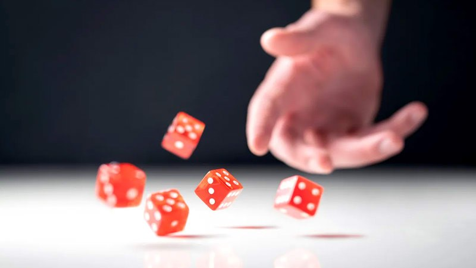
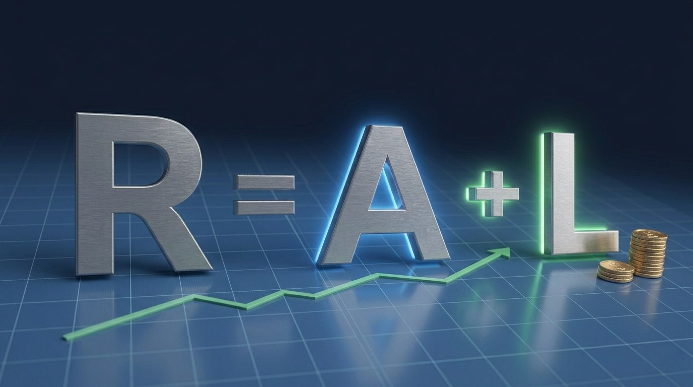

One Decision Away From Being Bill Gates
In the 1970s, a computer prodigy named Gary Kildall wrote CP/M, the most important operating system on the microcomputers of the day — the software the whole young industry was built around. In 1980, IBM came knocking for an operating system for its new personal computer. That deal should have been his ticket to becoming the richest man in the world. It fell through. IBM turned instead to another young man: Bill Gates. Gates took the deal, and Microsoft took off.
Kildall died in 1994 after a head injury at a bar in Monterey, California, at just 52 — remembered in the papers as the man who was one decision away from Gates's life. Same caliber of talent; one became the richest man alive, the other a footnote. And Gates himself has never denied it: timing and luck played an enormous part — without that lucky break, there would be no Microsoft.

This Isn't a Special Case — It's the Rule
If outcomes at that level are decided mostly by luck, what makes an ordinary person in the market believe they can keep beating randomness on timing? In *The Success Equation*, Michael Mauboussin makes a point most investors would rather not hear: once everyone's skill rises and converges, luck becomes *more* decisive, not less. He offers a neat test — ask whether you can lose on purpose. In chess you can throw a game, which means skill rules it; but on a roulette wheel or a lottery ticket, you might win no matter how hard you try to lose — that's luck in charge. The stock market sits closer to that end.
In *Fooled by Randomness*, Nassim Taleb calls those who survive a lucky streak "lucky fools" — people certain their luck was brilliance. Even Warren Buffett has said more than once that he's among the luckiest people alive: right country, right era, right head start. When even they admit luck played the lead, an ordinary person's odds of beating randomness on timing, over and over, are basically zero.
Yet most people keep going head-to-head with luck anyway. They wait for the "perfect" dip, watch the charts for a magic entry, and tell themselves the next big move will finally reward their patience. Then the market moves without asking permission, and they either freeze or chase.
The Real Problem Isn't Too Little Luck — It's a Bet Too Concentrated
Picture two people with the same skill and the same capital. One "brilliantly" puts it all in on a single day; the other spreads the same money across dozens of months, even years. In a rising market the first looks far smarter — for a while. In a falling or choppy one, he can flip from genius to trapped fool in an afternoon. The difference is rarely skill; it's mostly the luck of the moment he entered. And the person sitting in cash waiting for a "better price" usually never gets the one he pictured, while the person who bets big at the wrong moment freezes the instant prices drop. Both leave enormous amounts of catchable luck on the table.
How Dollar-Cost Averaging Quietly Pockets Luck
Dollar-cost averaging is almost boringly simple: invest a fixed amount at fixed intervals, whatever the price. When prices are high you automatically buy less; when they're low you buy more, and over time your average cost tends to land below the average price of the stretch you invested through. In a world run by randomness, that mechanical habit does something powerful. It forces you to keep buying when you're most afraid — the market's sharpest rallies often begin when sentiment is worst, and while everyone else is frozen, you're quietly stacking shares in exactly the windows where future returns tend to be highest, no forecast required. It dilutes bad luck: one terrible entry no longer defines your whole result. And it hands you dozens or hundreds of "luck samples" instead of one big bet — and in a system that drifts upward over long stretches, more samples raise the odds of catching the good ones.

Put it another way. Call the total return you finally see on your statement R (Observed Return — what you actually get). It's really two things added together: A (Ability — your genuine skill: stock selection, risk control, allocation, valuation) plus L (Luck — randomness: short-term swings, macro shocks, policy black swans, a hot sector). That is, R = A + L. The catch is that your statement only shows you R; you can't easily tell whether A or L did the work this time. And the shorter the window, the larger L looms and the more it drowns out A — which is why judging someone on one or two years of returns almost always fools you. But L is random and cancels out: stretch the time long enough and take enough entries, and it slowly washes away, letting A — and the market's long upward drift — surface. Dollar-cost averaging is precisely the act of adding more time and more entries, nudging the R on your statement toward your true A.
Honestly: It Won't Beat Perfect Timing
Here's the honest part: DCA is not magic, and it does not promise to beat a lump sum placed at the perfect moment. In a market that only climbs, lump-sum often wins on the raw numbers. What DCA reliably does is raise the probability of an acceptable outcome — especially for people who can't, or shouldn't, gamble on timing, and who would otherwise sit on the sidelines or bet it all at the wrong moment. Long-run simulations keep showing the same thing: people who kept averaging through bull and bear still landed solid results even with ugly entry points, while strategies that waited for "a better price" often lost — too much time in cash, too much of the rebound missed.
There's also a famous piece of proof. In 2007, Buffett bet publicly that over the next decade, a low-cost S&P 500 index fund would beat any basket of hedge funds a pro could hand-pick. One hedge-fund manager took the challenge. When the ten years closed (2008–2017), the index fund had returned 125.8% in total; the five funds-of-funds averaged about 36%. The most expensive, brilliant, hardest-working professionals, net of fees, lost to a strategy that does nothing but keep holding the index. You can't copy Buffett's eye — but you can copy that boring move.
What to Actually Do
If the aim is to capture luck systematically rather than gamble at it now and then, a few principles hold up. Keep the money in broad, low-cost funds or ETFs that represent large, productive economies, so single-name luck doesn't sneak back in. Automate the buying, and kill the "feels expensive this month, I'll skip it" impulse. Keep the amount fixed, or let it grow with your income — don't get clever with variable sums unless you have a tested rule written down. Judge success over rolling five- to ten-year stretches, not months: short windows belong to luck, long ones to discipline. And accept that some stretches will feel foolish — those are often exactly where your best average costs come from. The system works best when it's boring.
You Don't Have to Be Lucky Every Day
Luck is real, and in the short run it runs the show; trying to out-time it usually ends badly. Dollar-cost averaging doesn't abolish luck — it just swaps the question. Instead of "I need one wildly lucky entry," it becomes "I'll keep taking samples, and let the odds and the long upward drift do the work." That trade is open to almost anyone with steady income and the nerve to tune out the noise. Most people will keep waiting for the perfect day. A smaller group just keeps quietly buying. Give it enough time, and the second group tends to hold more of the market's good luck — without ever once having to guess when it would arrive. What you're really after was never a perfect day. It's the calm of staying in the game.
The ideas, figures, and research here draw on Michael Mauboussin's The Success Equation, Nassim Taleb's Fooled by Randomness, Warren Buffett's public remarks and his 2008–2017 ten-year bet, public reporting on Gary Kildall and the early personal-computer industry, and long-run historical market data. This article is educational and does not constitute investment advice.